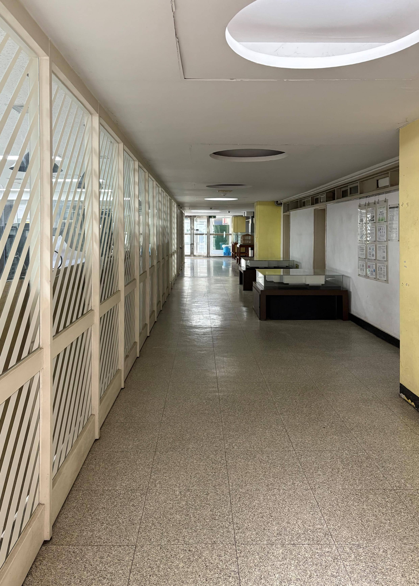
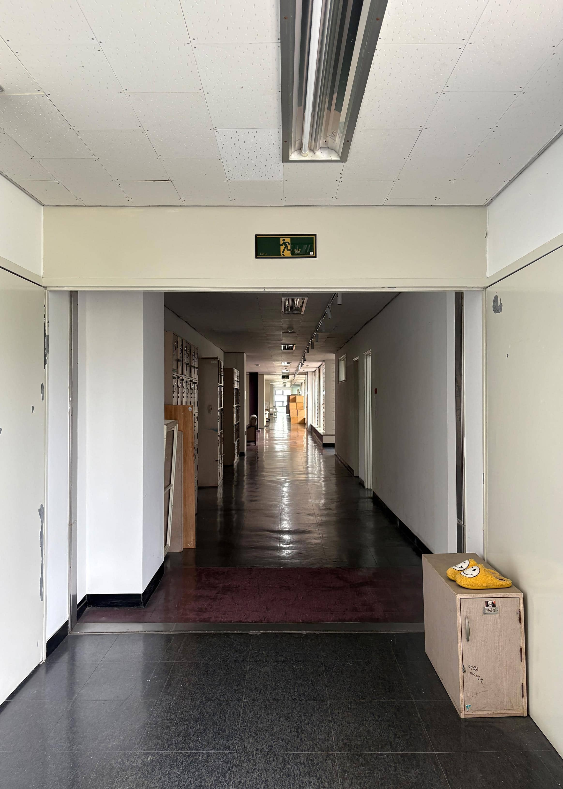
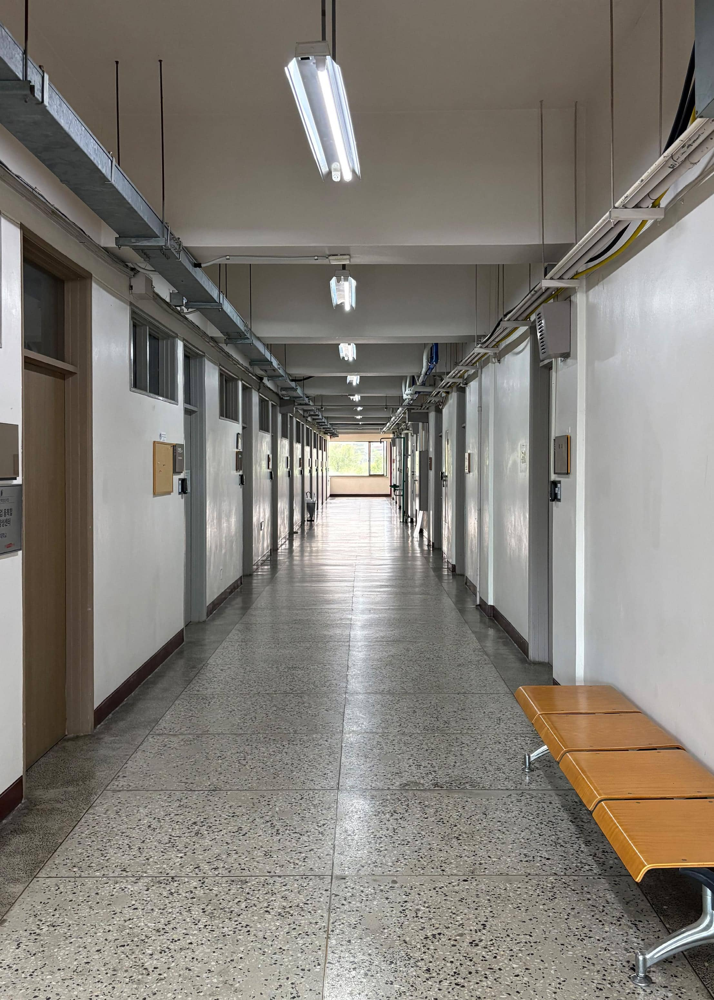
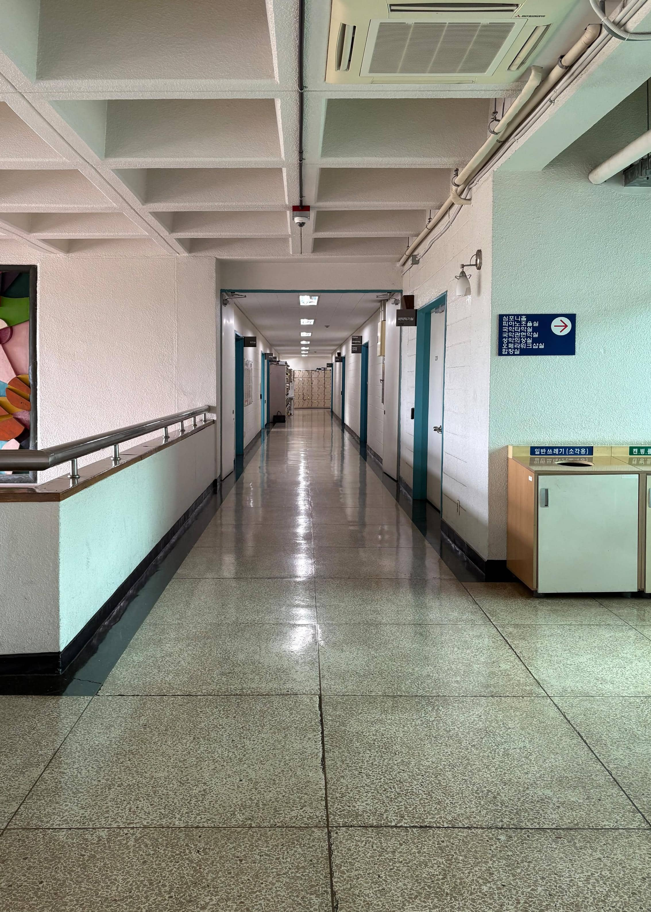
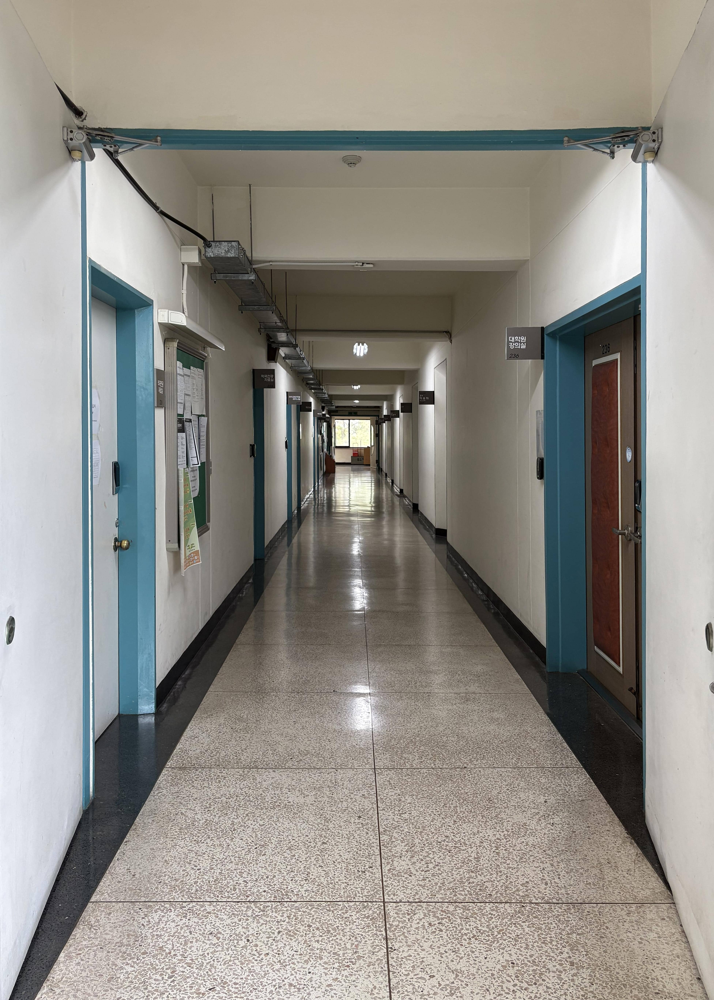
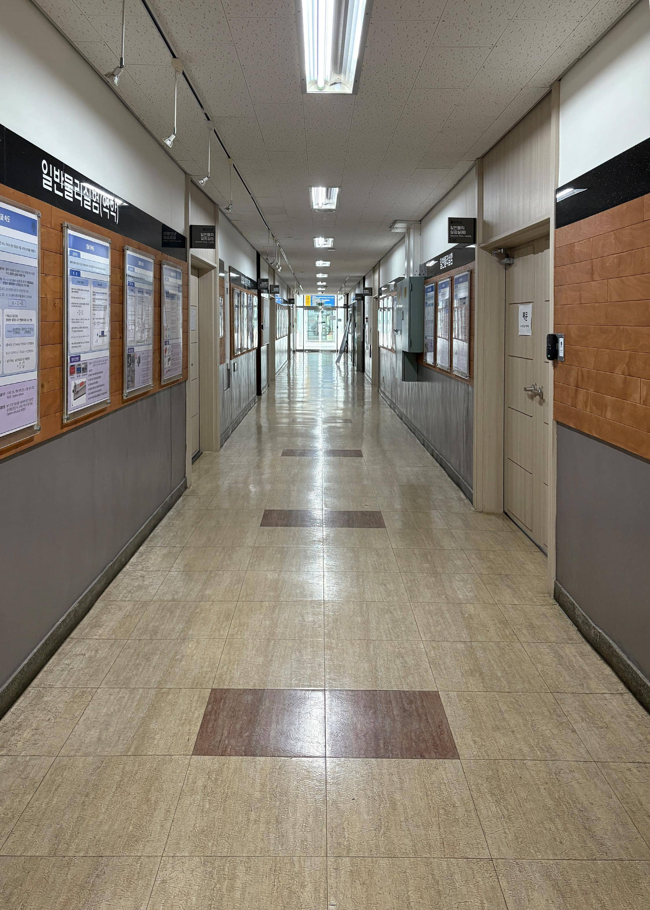
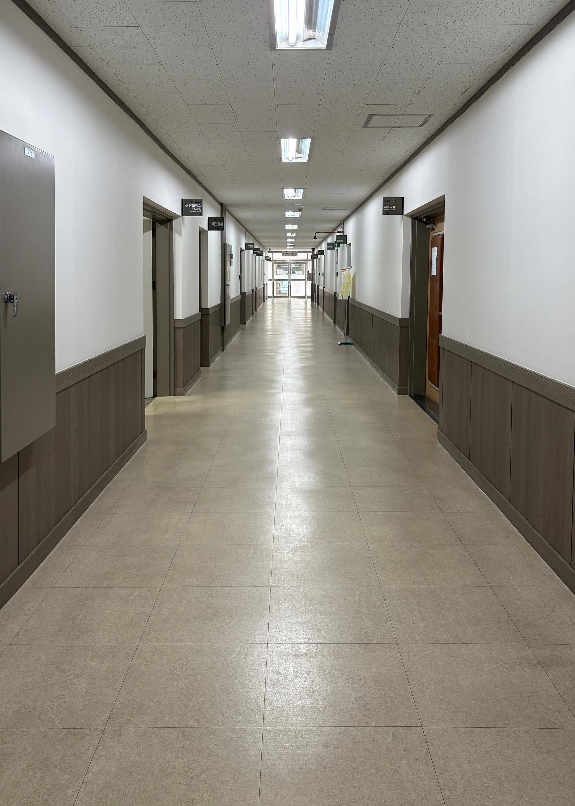
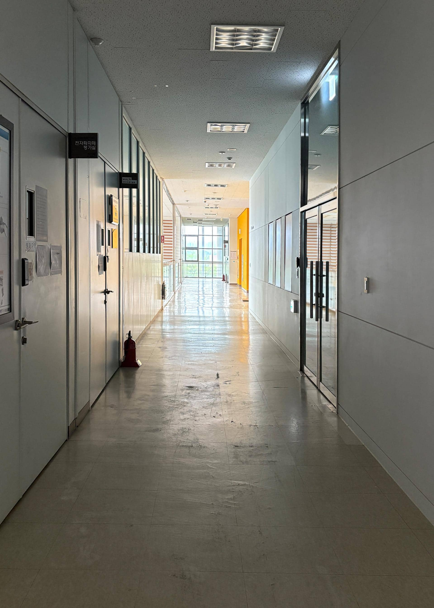
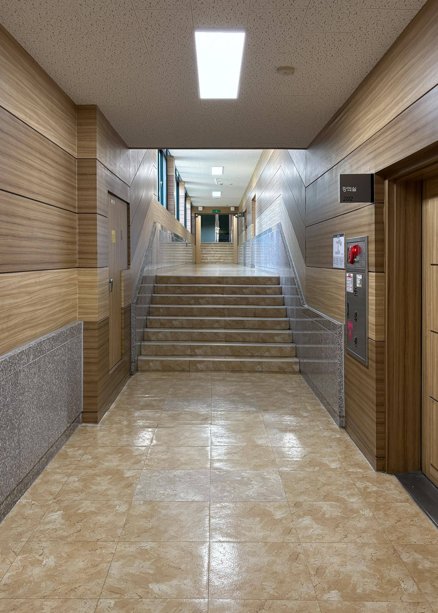
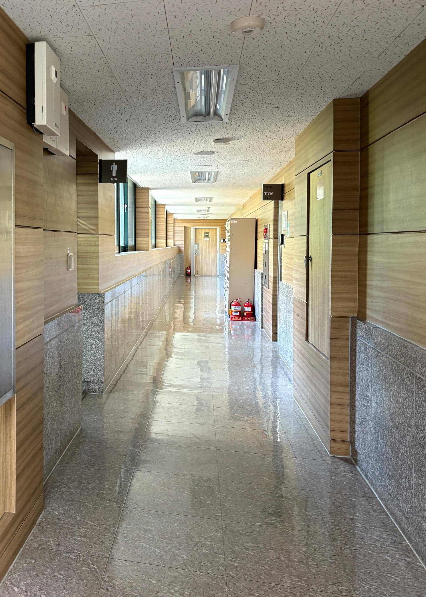

중복도
복도의 양쪽에 방이나 공간이 있는 구조
장점: 공간 효율이 높음
2025.05.23

건축관 1층 12:29p.m.

건축관 3층 12:40p.m.

화공관 2층 12:48p.m.

음악관 2층 16:28p.m.

음악관 2층 16:29p.m.
2025.05.28

사회과학관 1층 16:17p.m.

사회과학관 1층 16:21p.m.

산학협력단 2층 16:39p.m.
2025.05.30

인문관 2층 12:33p.m.

인문관 1층 12:37p.m.